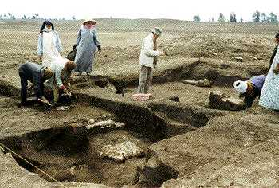

|
After ten years'
work in El-Ashmunein, Jeffrey Spencer went on to direct excavation
at the site called Tell el-Balamun in the northern Nile Delta. This
huge and relatively intact stratified archaeological mound marks
the position of Behdet or Sma-Behdet, the northernmost city of Pharaonic
Egypt, established by 2400 BC and continuously occupied down to
the end of the fifth century AD.
By the New
Kingdom the town had acquired the additional name of Paiuenamon,
from which 'Balamun' is derived.
|
 |
|
Excavation began
in 1991 and has continued each Spring since, resulting in the discovery
of three destroyed temples within a huge enclosure of mud brick.
The plans of the temples had to be recovered from the outlines of
their vast sand-filled foundations, in which crucial dating evidence
was found in the form of several foundation deposits containing
small objects inscribed with royal names.
The oldest deposits
were in the largest temple, originally dedicated to the god Amun,
and dated from the reign of King Sheshonk III (c. 850 BC).
This temple had been completely demolished in the fifth century
BC, but was later rebuilt by King Nekhtnebef in about 350 BC, of
whom a separate foundation deposit was found.
The discovery of a damaged statue-group of Ramesses II with the
god Amun and the goddess Mut suggested that earlier temples had
existed in the same area. This quartzite sculpture was inscribed
on the back with the name of the city, Sma-Behdet. Two subsidiary
temples in the enclosure also produced foundation deposits, which
identified their founders as Kings Psamtik I (664-610 BC) and Nekhtnebef
(370-353 BC).
Other investigations have revealed settlement areas of the seventh
century BC and Ptolemaic Period (332-30 BC), from which pottery
and small objects have been retrieved. Some Published
Reports are available.
|